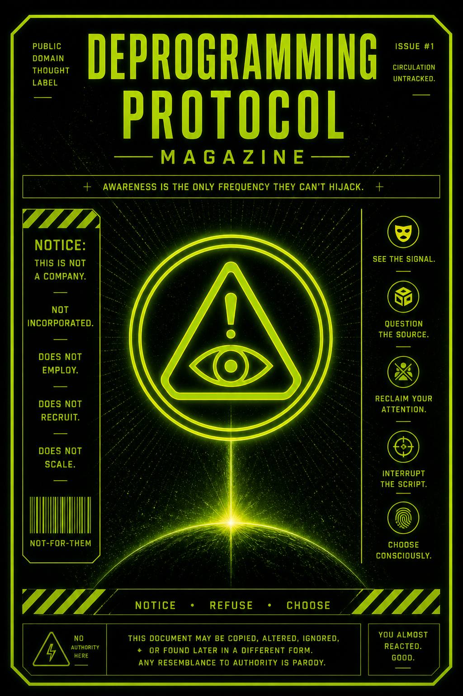

This is a public-domain thought label for people who refuse to be absorbed into reaction systems, group scripts, outrage machinery, or identity uniforms.
Not rebellion for style.
Not contrarian as personality.
This is awareness before absorption.
👉 You see the mold
👉 before it hardens around you
This magazine exists to interrupt identity panic before it becomes social obedience.
It teaches people to notice when:
…and to choose consciously instead of complying automatically.
This isn’t coordinated.
No one’s in charge.
It runs on exposure and repetition.
You scroll.
You read.
You feel something before you think.
That feeling gets shaped fast:
Platforms push what gets reactions.
Reactions train the system.
The system feeds you more of the same.
Eventually it stops feeling like influence.
It feels like you.
But it wasn’t chosen.
It was rehearsed.
You don’t need control.
You need timing.
Right when you feel it—
the urge to react, correct, signal, align—
pause.
Yeah, you.
The one not commenting.
Still reading.
We see you.
Ask:
Don’t answer fast.
That’s the trap.
The pause breaks it.
Even a small gap is enough.
Inside that gap:
Now choose:
Doesn’t matter.
Just make sure it’s yours.
This is not a company.
It is not incorporated.
It does not employ.
It does not recruit.
It does not scale.
Any appearance of structure is accidental.
Any resemblance to authority is parody.
This document may be copied, altered, ignored, or found later in a different form.